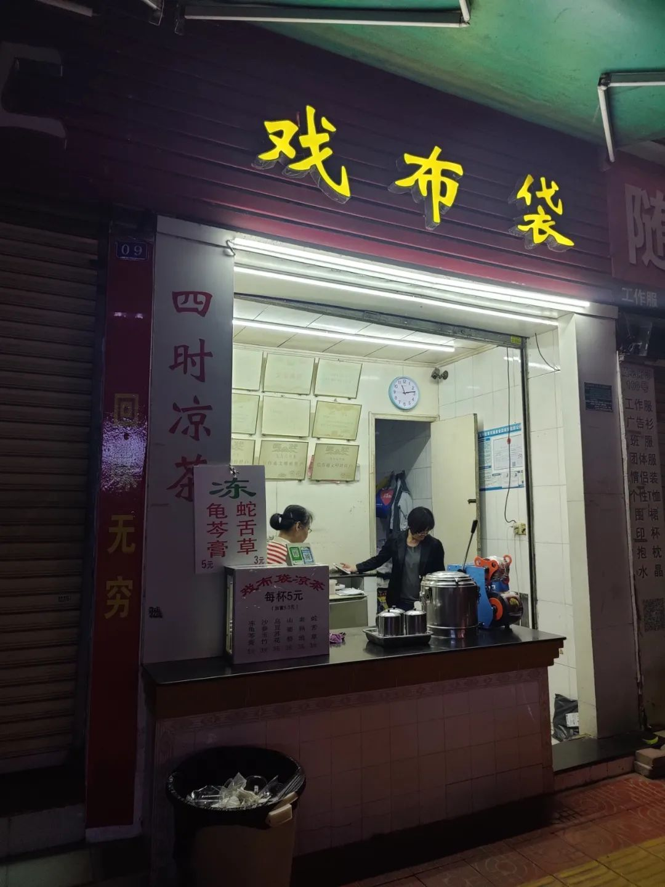
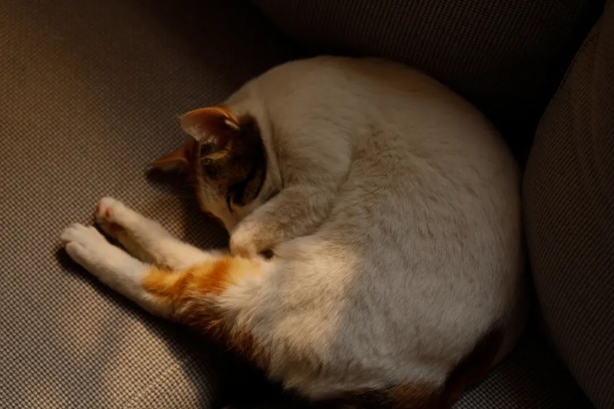
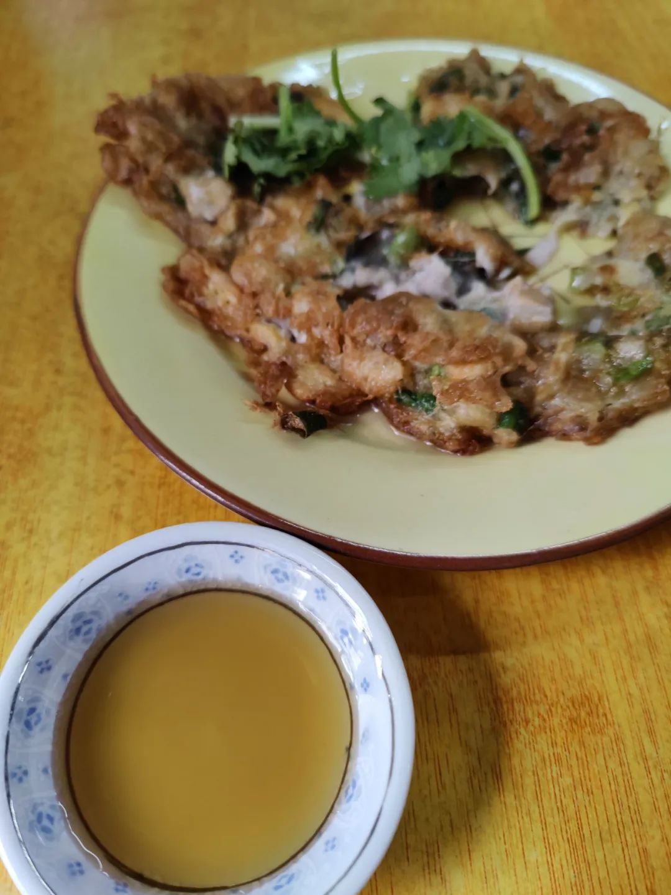

本文是张衔瑜第213篇推文
共计3103个字，56张图
梅州是一个单独的地方。潮汕是三个地方的总称：潮州、汕头和揭阳。这次出行的目的很简单，去买点能带走的礼物。潮汕牛丸应该可。那就潮汕了。这么说有点小奇怪，不过梅州的确只是路过。
从长沙飞梅州，落地核酸后、Zoom开个会。从客天下景区下来，Zoom上个课。云上办公真是不离不弃。希望可以早日摆脱这种出门还要带电脑的旅行状态。五斤的重量和与之相对应的体积，放下一本理想国译丛的书、还能放下一双麂子皮手套。
这是前话。
到梅州主要想看看客家文化。可惜安排行程的时候看到大鱼海棠里的花萼楼实在是太远了，而大埔有没有太吸引人的内容，于是作罢。在市区不远的郊外找到了客天下景区，无意中路过了林风眠艺术馆，里面已经被搬空了。
上山、下山，一路上都有人想办法说哪儿没多少看问我要不要坐车。其实本来我觉得景区还有些能看的，虽然现代化意味很浓，但是一再被怂恿去玻璃栈桥、云中飞车之类，只会让我觉得玩起来没有沉浸感。
正好最近有在看一些中文的论文，摘录了几篇：
[1] 蔡鸿文,杨和生. 梅州生态型植物造景的可行性分析——以客天下旅游产业园为例[J]. 嘉应学院学报,2008,26(3):74-79.DOI:10.3969/j.issn.1006-642X.2008.03.016.
[2] 侯秋霞. 客家人道德行为自评与他评的文化解读——以“世界客都”梅州客家人为研究样本[J]. 惠州学院学报,2011,31(5):61-66.DOI:10.3969/j.issn.1671-5934.2011.05.013.

不过查到的文献和在客天下景区玩有一样的感觉：就是没什么好玩的。爬爬山、拍点照、走下来。松风亭还有些衣冠简朴古风存的样子，有树生长得戳开了顶。这还是工作人员让我走更快的路下山，我说没必要我瞎走走才遇上的。总的来说就像是，做得都挺好、各方面设施也挺完善，可是就是没什么内核。如果不是“客家”这个词本身，我会觉得这里是再发展许多年后深圳文化产业的样子。

其他文献有在评价这里和植物造景之间的关联，以及世界客都下别的内容。不能说完全没有感觉到，只能说好像不是我想法中的那种联结。如果把这叫做现当代语境下的客家，那可能是文化差异性咯。
骑车离开客天下景区，去了一家当地评分很高的腌面。之前司机推荐我去吃腌面，一定要加上一碗五及第的汤。也还有三及第。五及第的意思就是全杂汤，大概就是什么猪肉都加进来了的意思。听起来是穆斯林避之不及的场所。
沿梅州东西向的主路到江边，江是梅江，路的尽头有一座体育馆——剑英体育馆。有时候也就是来了才知道知道，原来中央美院的首任院长林风眠来自梅州、叶剑英来自梅州。
//
离开梅州，去汕头的话得转一下车：先到潮汕站、再到汕头站。汕头站K开头的巴士路线和高德地图上是不一样的。不过没关系，到青旅后洗漱过，就可以出门按图索骥开始吃。先行致谢远程指导yaya和富有汕头生活情调的青旅老板vyon
适口砂锅粥
潮汕生滚粥/砂锅粥不知道开到多少地方去了所以我倒要来试试看这里的砂锅粥是个什么味道，于是点了这边销量最高的鳝鱼扇贝
戏布袋凉茶
沙参玉竹、老熟地、蛇舌草、龟苓膏

不知道聚焦在哪里，不过也随便了。凉茶是我这次到汕头之后觉得最令人舒适的。也许是最近不喜欢吃硬的食物，只期待一点流体的内容。这几种都是凉茶里所添加药材的名字。
家里人打电话过来，我用长沙话说了一会。因为就在店门口喝，老板接下来就开始问我：你是韩国人还是泰国人？我说韩国人泰国人有说中文说得这么好吗？很明显我是中国人啊，只是穿的裤子比较奇怪（谎称是在云南卖的，事实上网店都不知道是不是开在云南）
许吉凉水

丹霞老杨肠粉（这家一般般）
所以记仇的作者连图位都不给了
华美肠粉，还有店里的石橄榄汤
这家旁边有明珠桥，早晨就已经有人过来敬奉。现在桥南边的堂内许愿、供奉完，再到北边的香炉内烧付供奉的那位。
中午去尝了尝负有盛名的潮汕牛肉火锅as well as潮汕牛丸，在杏花吴记。确实和其他地方的不一样。川渝火锅、北京铜锅到潮汕地区的牛肉锅，这就都尝到了。不得不说烹饪料理上中国人还是太厉害了。
流水账的模式就是喜欢一记到底。中午应青旅老板vyon的邀请拍了几张猫猫图。


休息一会，下午七弯八拐去了华坞村。
去的时候已经不早了，因为这是一片老居民区，所以我想看的宗祠已经关门谢客、家家户户都开始生火做饭。这都怪吃了一份居平鲎粿，老板很想来看我到底拍了点什么。所以我下午来了一趟，第二天一早又来了一趟。
华坞村的建筑是令我挺疑惑的。
按道理来说，祠堂旁边一定距离之内，房屋的高度是不允许超过祠堂上梁的高度。不过显然在这边没有在意；有的姓氏或许有好几个祠堂，比如最大的、我进去了的林氏宗祠，在这一片我看到了的就有三个、管理人告诉我说总共有四个，原因很简单：兄弟分家。
管理人问我“你也姓林吗？”
我说不，但是我想进来看看“我学这个”which is 骗鬼，但是感兴趣是确实
管理人说“林氏的祖宗是比干呐”
我说你们历史还挺长。我看我家族谱发现我的祖先是轩辕氏
管理人介绍“我们这边最热闹的时候是春分、秋分”问我你们那边过什么
我想了想，大概是上元中元和清明吧
祠堂建筑顶上的内容，我随机街采了住在祠堂正对门或者斜对门的几户，问“你们知道祠堂上的那些雕塑是什么吗？”也有热心群众跑出来跟我一起看，看着看着就开始盲猜“你看这个像不像孙悟空”、“那边那个应该是铁拐李就得是八仙”还没说完就自己都笑场了
不过我还是觉得最有文化气的就是这里。走的地方多了，就可以开始比较。以海岛为基础，上一篇尬走到里边有对比厦门鼓浪屿和北海涠洲岛。鼓浪屿是一个很典型的文化场地，可以把它当做标尺来衡量其他地方，比如这次又可以衡量闽南客家里，在潮汕找到的这一片古建筑。
潮汕话不属于粤语的大片区里。粤东这一块都分在了闽南话当中。传统粤语应该到广州和香港去找。潮汕方言实际上是闽南语的一个支系。随手的note
晚上和几个青旅里的朋友去吃了桂园白粥。说是白粥，但是最负盛名的是这里的生腌。生腌几乎没有什么硬扎的碳水，所以需要一碗白粥。白粥我试了一点点，下里巴人的描述方式就是白米稀饭。兴许还加了一点点盐，不过我没有尝出来。生腌很需要这个。因为所谓生腌，就是当你有了一份生鲜之后，用一些调制的酱料不经过任何升温的程序，处理两三个小时之后就直接吃。不得不说潮汕人在生鲜处理上很有一套，主要是酱料调的恰到好处。
后来觉得，如果是那种只在单一菜系中生活的人、或者没有怎么在外接触不同菜系的人，应该都很难在生腌上存活下来。场上五湖四海的朋友来自徐州、青岛、阳江和保定，最后就是我还在一直吃下去。因为觉得就和戏布袋凉茶、许吉凉茶、或者随便广东的哪种凉茶差不多，没有太多果腹感而又挺好吃。
晚点去吃了些许主食，在牛牛牛肉饺。一份普通的湿炒牛河。
看到一个鱼头砂锅粥。有吓到我，感觉不是人类的食量
带了一小瓶怡宝和一大瓶怡宝到青旅。本来以为会会喝不完，但是青旅common area龙门阵已经摆下了。随随便便就喝完，大概这也是住青旅的好玩地方。一群长期都是一个人旅游的人凑到了一起，还怕没有故事吗？每个人都是一本跨越地理与时空界限的大书，除去一些夸大或者美化的记忆，好玩之处也不减。
最后的一餐是隆江猪脚拼卤鹅，在老鲁猪脚鹅肉饭。
哦好像不是最后一餐，最后一餐是在傻脑蚝烙。问员工，你们为什么要叫傻脑。员工说：老板卖东西既好吃又便宜，不是傻脑是什么呢？我：well, let’s see

这是后话。
买了点创记牛肉丸带回家，这也是此行最大的目的。感觉和在汕头吃到的味道差不多，也可能是我没有精细老饕在这里。下次要是有人在长沙做口味虾不放紫苏的话，我也可以像上一篇里上海老饕去争炸猪排敷面包糠一样去试试看。
又，也许海事一直都有，只是在游客过来玩耍能看到的部分越来越少。这是个疑惑，不过也不是那么期待答案。约莫不非得由我来指导。
又又，有一支台北的乐队 气质很像汕头——孔雀眼